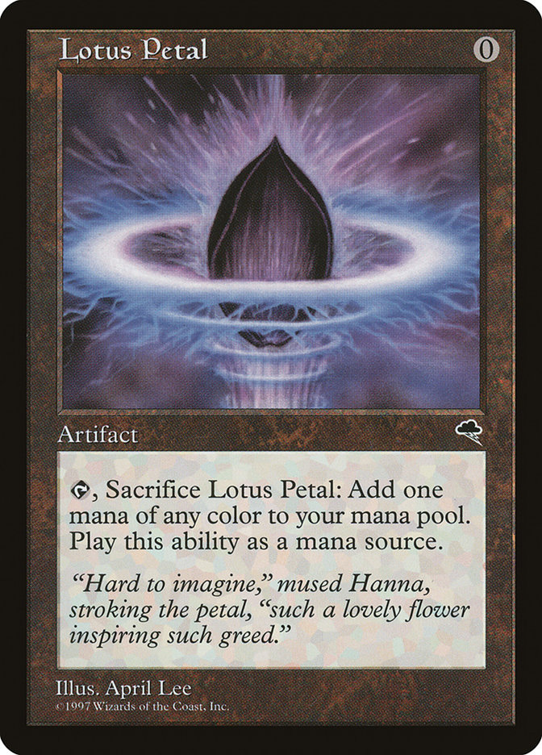
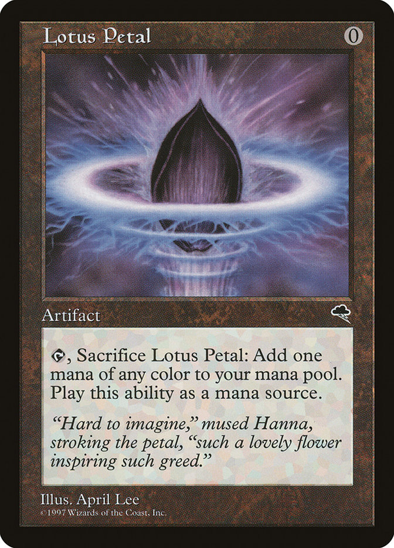

Quiz Magic the Gathering
au Festival Dons des Dragons 2024
Par les Arpenteurs de Strasbourg
Samedi 30 novembre 2024
Un Quiz sur Magic: the Gathering
Bienvenue dans ce quiz sur Magic: the Gathering , notre jeu préféré !
Il y aura 20 questions, 5 fois de suite selon ce motif :
- 4 questions “plutôt faciles”, en QCM à deux ou quatre choix, valant 1 point chacune,
- 1 question “plus dure”, valant 2 points chacune, avec un bonus valant 1 point de plus !
Répondez sur vos ardoises, et à chaque question nous compterons les bonnes ou mauvaises réponses !
Question 21/20 : connaissance des cartes - Bonus pour départager, si besoin
Combien existe-t-il de créature(s), à bord noirs (pas de “Un-Set”), ayant une endurance imprimée de 0 (et pas *), ne recevant pas de marqueur +1/+1 lors de leur arrivée en jeu, n’ayant pas de capacité de définition de caractéristique, et n’ayant pas de capacité statique définissant ou augmentant son endurance ?
- aucune (zéro)
- une seule
- deux
- cinq


 
 
 Qui est l’artiste ayant illustré la carte
Qui est l’artiste ayant illustré la carte 


 Comment s’appelle l’artefact légendaire qu’il faut contrôler, afin de pouvoir obtenir la surpuissante carte fusionnée
Comment s’appelle l’artefact légendaire qu’il faut contrôler, afin de pouvoir obtenir la surpuissante carte fusionnée